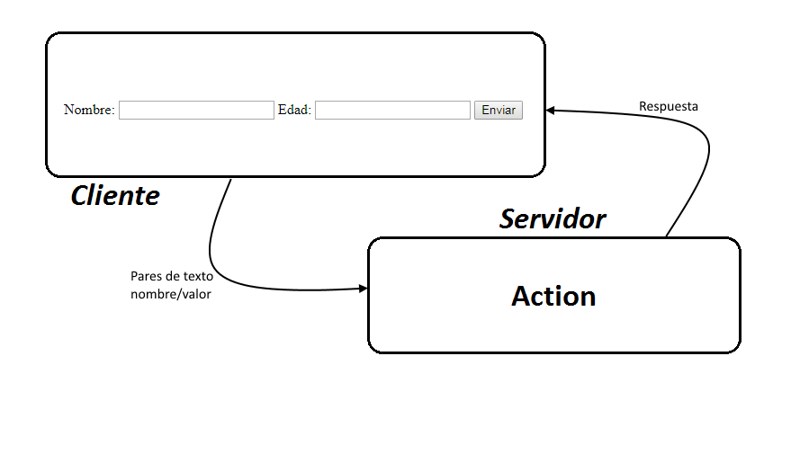
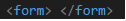

Los formularios permiten poner elementos interactivos en las páginas, por ejemplo, para recibir mensajes de sus lectores, de forma similar a las cartas de respuestas que se encuentra en algunas revistas.
El lector escribe la información rellenando campos o haciendo clic sobre botones, y luego presiona un botón de envío para enviarla a una dirección URL que se suele dirigir a una dirección de correo electrónico o a un script dinámico Web como PHP, ASP o CGI.
Los formularios están delimitados con la siguiente etiqueta.

Esta etiqueta agrupa varios elementos del formulario, como botones y casillas de texto, y tiene 2 atributos: method y action.